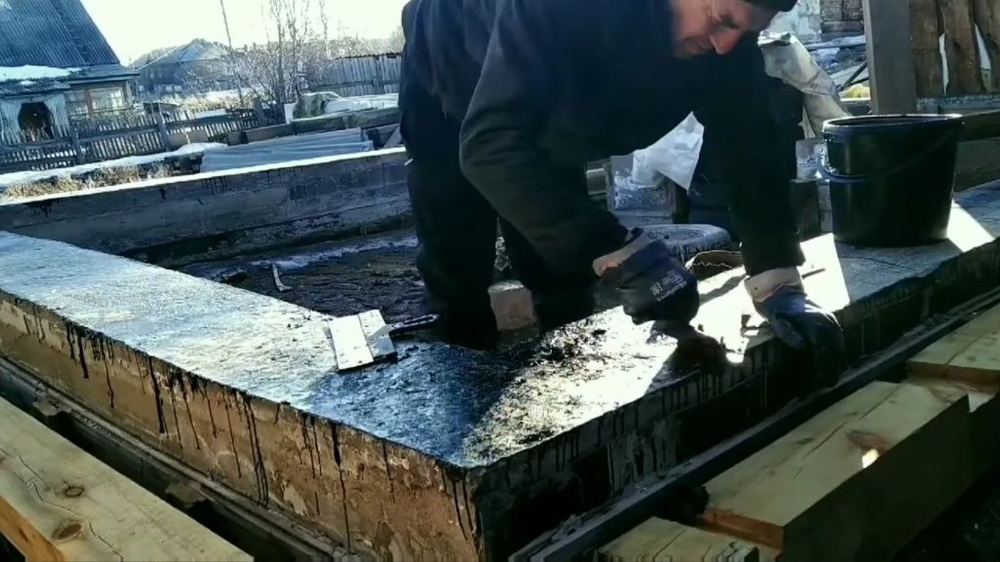
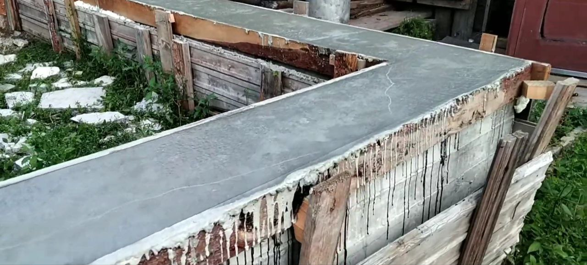
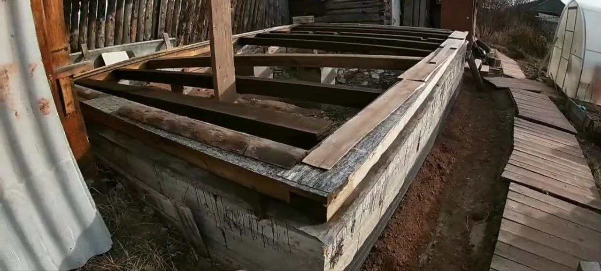

В 2019 году решил: нужна времянка 4 на 6, чтоб инструмент сложить, передохнуть. Днём работа, вечером стройка. Всё лето делал опалубку. Траншею копал, доски пилил, сколачивал. Не спешил, потому что сил после работы не особо.
Поздняя осень 2019. Заливаю бетон. Заказал машину, посчитал вроде всё. Заливаю, заливаю... и бац! Не хватило. Где-то 5-10 см до верха. Мороз уже нос щиплет, бетон схватывается, а у меня недолив.
Никогда не экономь на расчётах бетона. Лучше пусть полмешка останется, чем так стоять и смотреть на недолитый фундамент. Пришлось оставить до весны.

Зачистка и подготовка фундамента к доливке
Весна 2020. Снег сошёл, фундамент стоит, недолив торчит. Надо доливать. Сделал опалубку из досок поверх старого фундамента, выставил уровень, залил.

Фундамент после доливки, весна 2020
Купил брус — листвяк на лаги. Нижний венец из старого бруса с разбора домов, 180х180. Обработал антисептиком, проложил рубероидом и уложил.

Обвязка и лаги уложены на фундамент
Планировал каркасник, но цены на доску взлетели в два раза. 35 000 за два куба — это пипец. Стройка встала до следующего года.